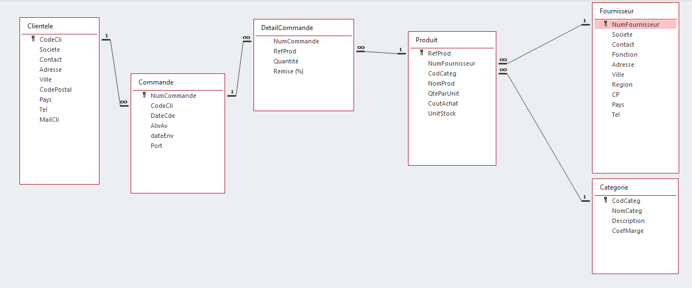
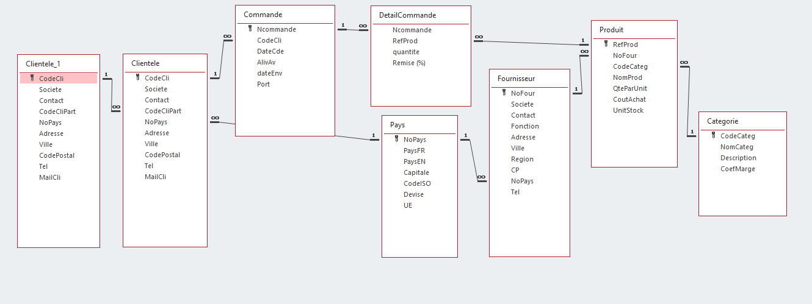
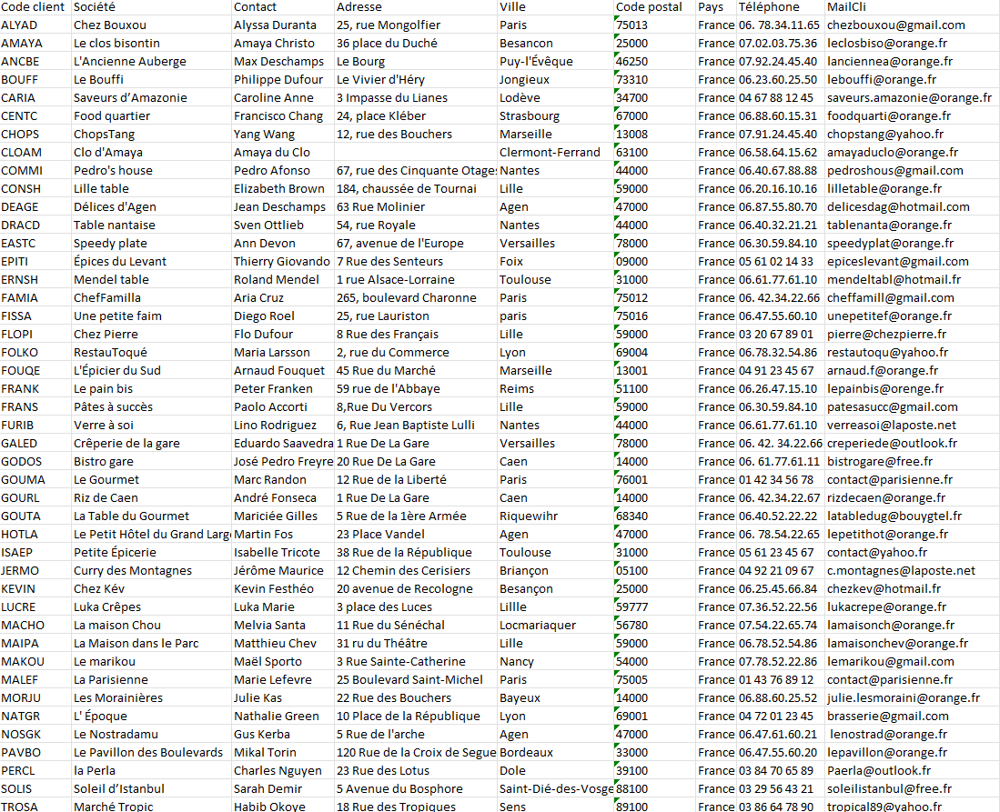

SAE 1.04 HTML
Wrote by: Diego Ayala Huezo, Amine Laghouane, Mohammed Nahed, Selim Kefi & Tashfeen Khan
Introduction - Contexte général
KDou est une entreprise de commerce de produits alimentaires d'épicerie fine ou typiques, achetés à des fournisseurs situés dans le monde entier. Tous ses clients sont actuellement basés en France. L'entreprise génère un chiffre d'affaires satisfaisant, mais s'interroge sur sa rentabilité et sur la manière d'améliorer son positionnement concurrentiel tout en renforçant son image d'entreprise éco-responsable.
Dans ce cadre, notre équipe a réalisé trois missions successives :
- Mission 1 : Prise en main du jeu de données KDou (Excel), compréhension du modèle et premières analyses.
- Mission 2 : Exploitation de la base de données Access de KDou avec Microsoft Access et le langage SQL, afin d'obtenir des indicateurs opérationnels.
- Mission 3 : Analyse d'une nouvelle version enrichie de la base KDou (table des pays, gestion des partenaires, coefficients de marge) pour produire des indicateurs calculés liés à la santé, à l'offre, à la provenance et aux partenariats clients.
L'objectif global de ce rapport est :
- De étiser les trois mission réalisées pour KDou
- De mettre en avant des indicateurs pertinents pour la stratégie de l'entreprise (rentabilité, éco-responsabilité, organisation des livraisons)
- De conclure sur les outils utilisés : Excel, Access et langage SQL.
Schéma BD pour la Mission 1 et 2 :
Schéma BD pour la Mission 3 :
Mission 1 - Prise en main du jeu de données KDou (Excel)
1. Contexte
Dans la première mission, nous avons travaillé à partir d'un classeur Excel contenant une feuille par table de la base de données KDou: Fournisseur, Categorie, Produit, Clientele, Commande, DetailCommande. L'objectif était de: comprendre la structure des tables (clés primaires, clés étrangères), apprendre à naviguer et interroger les données directement dans Excel, repérer des anomalies de qualité des données, proposer des idées d'amélioration du modèle et de l'organisation des données.
Excel montrant quelques lignes de la table Clientele
2. Bilan structuré de l'étude des données
2.1. Structure des tables et clés
Nous avons identifié, pour chaque table :
- Les clés primaires (PK)
- Les clés étrangères (FK)
- Le type d'informations utile pour KDou.
Exemple de synthèse par table :
| Table | Clé primaire (PK) | Clé étrangère (FK) | Informations utiles pour KDou |
|---|---|---|---|
| Fournisseur | PK : NoFour - Candidat : Societe | FK : NoPays (dans la nouvelle version) | Gestion des partenaires, négociation, logistique fournisseur. |
| Categorie | PK: CodeCateg | - | Classification des produits, coefficients de marge. |
| Produit | PK: RefProd - Candidat: NomProd | FK: NoFour (Fournisseur), CodeCateg (Categorie) | Catalogue, coûts d'achat, stocks, origine des produits. |
| Clientele | PK: CodeCli - Candidate: MailCli | FK: NoPays (dans la nouvelle version) | Gestion clients, facturation et livraison. |
| Commande | PK: NumCommande | FK: CodeCli (Clientele) | Suivi des ventes, dates de commande, livraison. |
| DetailCommande | PK composite: NumCommande + RefProd | FK: NumCommande (Commande), RefProd (Produit) | Détail des lignes de commande, calcul du CA, analyse de rentabilité. |
Cette première étape nous a permis de visualiser la structure relationnelle sous-jacente, même dans un simple fichier Excel.
2.2. Navigation et exploration des données
Pour répondre aux questions posées dans le sujet, nous avons utilisé:
- Les filtres sur les colonnes
- Des recherches et tri
- La fonction RECHERCHERX pour faire des jointures “manuelles” entre feuilles
Exemple de résultats obtenus:
| Question | Résultat (extrait) |
|---|---|
| Nombre de clients parisiens | 5 clients parisiens. |
| Nombre de clients bisontins | 2 clients à Besançon. |
| Nombre de clients en Île-de-France | 6 clients en Île-de-France. |
| Offre de produits entre 100€ et 250€ | Exemples: Thüringer Rostbratwurst, Côte de Blaye… |
| Produits commandés par le client "MALEF" | Boissons, desserts, produits laitiers, poissons, etc. |
| Clients sans commande | Jean Deschamps, Kevin Festhéo, Matthieu Chev, Maël Sporto. |
Cette exploration a permis de se familiariser avec:
- Le profil de clientèle (répartition géographique, activité)
- L'l'offre de produits (catégories, prix)
- Et quelques cas particuliers (clients sans commandes, produits spécifiques)
2.3. Problèmes de qualité et de cohérence des données
En analysant la base, nous avons identifié plusieurs problèmes:
- Champs incomplets: adresses, régions, numéros de téléphone parfois absents.
- Formats hétérogènes:
- Numéros de téléphone avec des espaces, des points, ou sans séparateurs
- Codes postaux saisis de manières différentes
- Noms de pays non normalisés:
- Variantes comme « U.S.A. », « USA » et « Etats-Unis » pour le même pays
- Emails manquants pour certains fournisseurs, ce qui complique la communication.
- Choix de modélisation discutables:
- Coefficients de marge stockés uniquement par catégorie
- Dépendance forte à des codes sans contrôle de format
Ces problèmes impactent directement:
- La fiabilité des analyses
- La qualité de service (ex. commandes non traitées, difficultés de contact)
- Et réputation de KDou
2.4. Pistes d'amélioration
Les idées formulées pour améliorer la base et l'organisation des données sont:
- Rendre obligatoires certains champs (adresse complète, téléphone, email).
- Mettre en place des formats standardisés pour:
- Les numéros de téléphone
- Les codes postaux
- Les adresses
- Normaliser les pays via une table de référence (ce qui sera fait dans la mission 3)
- Stocker systématiquement les emails fournisseurs
- Éventuellement affiner la modélisation des marges (par produit plutôt que seulement par catégorie)
2.5. Conclusion Mission 1
La Mission 1 nous a permis:
- De comprendre le modèle de données de KDou
- De cartographier les tables et leurs liens
- D'identifier desproblèmes de qualité de données et de proposer des améliorations
- D'utiliser Excel comme outil d'exploration (filtres, tri, RECHERCHEX) pour répondre à des questions simples
Mission 2 - Exploitation de la base de données KDou avec Microsoft Access
1. Contexte
Dans la Mission 2, nous avons utilisé la base Access KDouSAE2025.accdb mise à disposition. L'objectif était de:
- Vérifier la structure des tables et les relations dans Access
- Exploiter la base via l'interface graphique QBE (Query By Example)
- Générer du SQL à partir de QBE
- Produire une série de requêtes répondant aux besoins de KDou sur les fournisseurs, clients, produits, commandes et optimisation des livraisons
Schéma des relations de la base KDou dans Microsoft Access
2. Indicateur 1 - Clients sans commande
2.1. Énoncé et interprétation
Énoncé: Quels sont les clients qui n'ont pas encore passé de commandes (code, société et mail)
Interprétation: L'objectif est d'identifier les clients présents dans la table Clientele qui ne sont liés à aucune commande dans la table Commande. Ces clients représentent une cible prioritaire pour des actions de relance commerciale ou des offres promotionnelles
2.2. Résultat (extrait)
Clients sans aucune commande
| CodeCli | Société | MailCli |
|---|---|---|
| DEAGE | Délices d'Agen | delicesdag@hotmail.com |
| KEVIN | Chez Kév | chezkev@hotmail.fr |
| MACHO | La maison Chou | lamaisonch@orange.fr |
| MAIPA | La Maison dans le Parc | lamaisonchev@orange.fr |
2.3. Code SQL
Requête SQL listant les clients sans commandes
SELECT
cli.CodeCli,
cli.Societe,
cli.MailCli
FROM
Clientele AS cli LEFT JOIN Commande AS c ON cli.CodeCli = c.CodeCli
WHERE
c.NumCommande IS NULL;
3. Indicateur 2 - Produits carnés ou poissons très coûteux
3.1. Énoncé et interprétation
Énoncé: Quels sont les produits (fournisseur et pays de provenance) de catégorie Viandes ou Poissons ayant un coût d'achat de plus de 50€
Interprétation: Cet indicateur permet de repérer les produits les plus coûteux dans des catégories sensibles sur le plan environnemental (viandes et poissons). Les résultats aident KDou à réfléchir à:
- Une réduction de l'offre sur certaines références trop coûteuses
- Une éventuelle montée en gamme avec des produits plus durables ou mieux valorisés
3.2. Résultat (extrait)
Produits Viandes ou Poissons avec coût d'achat > 50€
| NomProd | Société fournisseur | Pays | Ville | NomCateg | CoutAchat (€) |
|---|---|---|---|---|---|
| Carnarvon Tigers | Coral Bay Delights Ltd. | Australie | Melbourne | Poissons | 52.08 € |
| Dea Surströmming | SkandiDelikat AB | Suède | Göteborg | Poissons | 120.00 € |
| Mishi Kobe Niku | Sakura Imports | Japon | Tokyo | Viandes | 80.83 € |
| Pâté chinois | Le Panier du Coin | Canada | Montréal | Viandes | 68.00 € |
| Perth Pasties | Boomerang Goods Pty Ltd. | Australia | Sydney | Viandes | 97.33 € |
| Thüringer Rostbratwurst | TanteGreta Handelsgruppe AG | Allemagne | Frankfurt | Viandes | 103.15 € |
| Tourtière | Le Panier du Coin | Canada | Montréal | Viandes | 56.20 € |
3.3. Code SQL
Requête SQL sur les viandes et poissons à coût d'achat supérieur à 50€
SELECT
p.NomProd,
f.Societe,
f.Pays,
c.NomCateg
FROM
(Produit AS p INNER JOIN Fournisseur AS f ON p.NoFour = f.NoFour)
INNER JOIN Categorie AS c ON p.CodeCateg = c.CodeCateg
WHERE
p.CoutAchat > 50
AND c.NomCateg IN (
"Viandes",
"Poissons"
)
ORDER BY p.NomProd;
4. Indicateur 3 - Catégories vendues par des fournisseurs américains
4.1. Énoncé et interprétation
Énoncé: Quelles sont les catégories de produits vendues par les fournisseurs américains
Interprétation: L'objectif est d'identifier quelles familles de produits sont importées des États-Unis. Cet indicateur donne une vision de la dépendance de KDou à un pays lointain et donc de l'impact potentiel en termes d'empreinte carbone liée au transport
4.2. Résultat
Catégories fournies par des fournisseurs américains
| NomCateg |
|---|
| Condiments |
| Boissons |
| Poissons |
| Produits secs |
4.3. Code SQL
Requête SQL listant les catégories des fournisseurs situés aux États-Unis
SELECT DISTINCT c.NomCateg
FROM
(Categorie AS c INNER JOIN Produit AS p ON c.CodCateg = p.CodCateg)
INNER JOIN Fournisseur AS f ON p.NumFournisseur = f.NumFournisseur
WHERE f.Pays = "Etats-Unis";
5. Indicateur 4 - Couples de clients parisiens (optimisation des livraisons)
5.1. Énoncé et interprétation
Énoncé: Pour optimiser les livraisons, lister les couples de clients situés tous deux à Paris (Code, Société et Mail pour chacun)
Interprétation: En repérant les couples de clients qui se trouvent dans la même ville et plus précisément à Paris, KDou peut organiser des tournées de livraison groupées. Cela permet de réduire les coûts de transport et l'impact environnemental tout en améliorant l'efficacité logistique
5.2. Résultat (extrait)
Couples de clients
| c.CodeCli | Société | c.MailCli | c2.CodeCli | Société | c2.MailCli |
|---|---|---|---|---|---|
| ALYAD | Chez Bouxou | chezbouxou@gmail.com | FAMIA | ChefFamilla | cheffamill@gmail.com |
| ALYAD | Chez Bouxou | chezbouxou@gmail.com | FISSA | Une petite faim | unepetitef@orange.fr |
| ALYAD | Chez Bouxou | chezbouxou@gmail.com | GOUMA | Le Gourmet | contact@parisienne.fr |
| ALYAD | Chez Bouxou | chezbouxou@gmail.com | MALEF | La Parisienne | contact@parisienne.fr |
| FAMIA | ChefFamilla | cheffamill@gmail.com | FISSA | Une petite faim | unepetitef@orange.fr |
| FAMIA | ChefFamilla | cheffamill@gmail.com | GOUMA | Le Gourmet | contact@parisienne.fr |
| FAMIA | ChefFamilla | cheffamill@gmail.com | MALEF | La Parisienne | contact@parisienne.fr |
| FISSA | Une petite faim | unepetitef@orange.fr | GOUMA | Le Gourmet | contact@parisienne.fr |
| FISSA | Une petite faim | unepetitef@orange.fr | MALEF | La Parisienne | contact@parisienne.fr |
| GOUMA | Le Gourmet | contact@parisienne.fr | MALEF | La Parisienne | contact@parisienne.fr |
5.3. Code SQL
Requête SQL affichant les couples de clients parisiens
SELECT
c.CodeCli,
c.Societe,
c.MailCli,
c2.CodeCli,
c2.Societe,
c2.MailCli
FROM
Clientele AS c INNER JOIN Clientele AS c2 ON c.Ville = c2.Ville
WHERE
c.CodeCli < c2.CodeCli
AND c.Ville = "Paris";
6. Conclusion Mission 2
La Mission 2 nous a permis de:
- Passer d'Excel à une vraie base relationnelle Access
- Exploiter le mode QBE comme interface low code pour construire des requêtes
- Générer et modifier du SQL pour affiner les résultats
- Produire des indicateurs opérationnels sur les clients à relancer, les produits à fort coût, les fournisseurs américains et les livraisons groupées
Mission 3 - Analyse de la nouvelle base KDou
1. Contexte
Dans la Mission 3, KDou fournit une nouvelle version de la base KDouSAE2026.accdb avec plusieurs évolutions importantes:
- Gestion des pays des fournisseurs via une table Pays avec un indicateur UE ou hors UE
- Mise en place d'une relation de partenariat client avec des clients pilotes et des clients partenaires
- Ajout d'un coefficient de marge par catégorie de produit pour calculer le prix de vente
À partir de cette base enrichie, nous devions:
- Réaliser quatre requêtes obligatoires sur les desserts et boissons, les produits carnés non commandés, le chiffre d'affaires hors UE et la comparaison pilotes partenaires
- Proposer au moins une requête supplémentaire par membre de l'équipe pour approfondir certains indicateurs
Schéma des relations de la nouvelle base KDou avec la table Pays et les partenariats
2. Indicateur 1 - Chiffre d'affaires Boissons et Desserts par année
2.1. Énoncé et objectif
Énoncé: Calculer le chiffre d'affaires annuel généré par les catégories Boissons et Desserts
Objectif: Suivre l'évolution des ventes de produits sensibles pour la santé comme les boissons sucrées et les desserts, et mesurer l'impact d'éventuelles actions de sensibilisation ou de changement d'offre
2.2. Construction de l'indicateur
Pour construire cet indicateur, nous avons:
- Utilisé la table DetailCommande pour récupérer les quantités commandées
- Joint les tables Produit et Categorie pour accéder au coût d'achat et au coefficient de marge
- Calculé le chiffre d'affaires avec la formule CoutAchat × quantite × CoefMarge
- Filtré sur les catégories dont le NomCateg est Boissons ou Desserts
- Regroupé les résultats par année de commande à partir du champ DateCde
2.3. Code SQL
Requête SQL CA annuel pour les catégories Boissons et Desserts
SELECT
YEAR(CO.DateCde) AS Annee,
CCUR(SUM(P.CoutAchat * DCO.quantite * C.CoefMarge)) AS CA
FROM
(
(
Produit AS P INNER JOIN Categorie AS C ON P.CodeCateg = C.CodeCateg
) INNER JOIN DetailCommande AS DCO ON P.RefProd = DCO.RefProd
) INNER JOIN Commande AS CO ON DCO.Ncommande = CO.Ncommande
WHERE
C.NomCateg IN ('Boissons', 'Desserts')
GROUP BY
YEAR(CO.DateCde);
2.4. Résultat et interprétation
Chiffre d'affaires Boissons et Desserts par année (extrait)
| Année | CA Boissons et Desserts (€) |
|---|---|
| 2020 | 179,786.46 € |
| 2021 | 1,496,318.00 € |
| 2022 | 1,557.50 € |
Si le chiffre d'affaires augmente fortement d'une année sur l'autre, cela montre une forte dépendance de KDou à ces catégories. Si le chiffre d'affaires stagne ou baisse, l'entreprise peut analyser l'effet de sa communication autour de la santé et de son offre de produits
3. Indicateur 2 - Nombre de produits carnés non commandés
3.1. Énoncé et objectif
Énoncé: Compter le nombre de produits de catégorie Viandes qui n'ont jamais été commandés
Objectif: Identifier les références carnées inutiles qui génèrent des coûts de stockage et un risque de gaspillage, afin de réfléchir à une réduction de l'offre carnée ou à son remplacement par des alternatives plus durables
3.2. Construction de l'indicateur
Pour obtenir ce nombre, nous avons:
- Sélectionné les produits dont la catégorie est Viandes
- Utilisé une sous requête qui récupère toutes les références de produits présentes dans DetailCommande
- Utilisé la condition NOT IN pour ne garder que les produits carnés jamais commandés
- Calculé le nombre total de ces produits avec la fonction COUNT
3.3. Code SQL
Requête SQL comptant les produits carnés non commandés
SELECT
Count(P.RefProd) AS NbreProduitCarne
FROM
Categorie AS Cat INNER JOIN Produit AS P ON Cat.CodeCateg = P.CodeCateg
WHERE
Cat.NomCateg = "Viandes"
AND P.RefProd NOT IN (
SELECT
DC.RefProd
FROM
Commande AS Co INNER JOIN DetailCommande AS DC ON Co.Ncommande = DC.Ncommande
);
3.4. Résultat et interprétation
Le résultat renvoie un nombre global représentant le nombre de produits carnés qui n'ont jamais été vendus. Ces références constituent une opportunité immédiate pour:
- Réduire l'offre peu performante
- Diminuer le gaspillage et les coûts de stockage
- Améliorer l'image environnementale de KDou
Tableau des références carnées jamais commandées
| Nombre de produits carnés non commandés |
|---|
| 2 |
4. Indicateur 3 - Chiffre d'affaires total avec des fournisseurs hors UE
4.1. Énoncé et objectif
Énoncé: Calculer le chiffre d'affaires total réalisé avec des produits provenant de fournisseurs hors Union Européenne
Objectif: Mesurer la dépendance de KDou à des fournisseurs lointains et évaluer l'impact potentiel sur le bilan carbone lié au transport longue distance
4.2. Construction de l'indicateur
Pour construire cet indicateur, nous avons:
- Joint les tables Pays, Fournisseur, Produit, Categorie, DetailCommande et Commande
- Filtré sur les pays dont le champ UE indique Hors
- Calculé le chiffre d'affaires avec la formule quantite × CoutAchat × CoefMarge
- Utilisé la fonction SUM pour obtenir le montant total du chiffre d'affaires avec les fournisseurs hors UE
4.3. Code SQL
Requête SQL calculant le CA total avec des fournisseurs hors UE
SELECT
Sum(DC.quantite * P.CoutAchat * C.CoefMarge) AS TotalCAFourHorsUE
FROM
Pays AS Pa INNER JOIN (
Fournisseur AS F INNER JOIN (
(
Categorie AS C INNER JOIN Produit AS P ON C.CodeCateg = P.CodeCateg
)
INNER JOIN DetailCommande AS DC ON P.RefProd = DC.RefProd
) ON F.NoFour = P.NoFour
) ON Pa.NoPays = F.NoPays
WHERE
Pa.UE = "Hors";
4.4. Résultat et interprétation
Le résultat est un montant de chiffre d'affaires total réalisé avec des fournisseurs hors UE. Si ce montant est élevé:
- KDou est fortement dépendante de fournisseurs éloignés
- L'impact environnemental lié au transport est potentiellement important
- L'entreprise peut envisager de relocaliser une partie des achats vers des fournisseurs européens ou français
Table montrant la part du CA UE et hors UE
| Chiffre d'affaires total avec fournisseurs hors UE (€) |
|---|
| 2,375,003 € |
5. Indicateur 4 - Activité des clients pilotes et partenaires
5.1. Énoncé et objectif
Énoncé: Y a t il des clients pilotes d'un réseau partenaire ayant autant de commandes que les clients partenaires
Objectif: Comparer le nombre de commandes:
- Des clients pilotes qui coordonnent un réseau de partenaires
- Des clients partenaires rattachés à ces pilotes
Cette comparaison permet d'analyser l'efficacité du modèle de partenariat et d'identifier les réseaux les plus dynamiques
5.2. Requête SQL par client pilote
Requête SQL calculant le nombre de commandes par client pilote
SELECT
Pilote.CodeCli,
Pilote.Societe,
Count(*) AS NbCommandePilote
FROM
(
Clientele INNER JOIN Commande ON Clientele.CodeCli = Commande.CodeCli
)
INNER JOIN Clientele AS Pilote ON Clientele.CodeCliPart = Pilote.CodeCli
GROUP BY
Pilote.CodeCli,
Pilote.Societe;
5.3. Requête par client partenaire
Requête SQL calculant le nombre de commandes par client partenaire
SELECT
Clientele.CodeCli,
Clientele.Societe,
Count(*) AS NbCommandeClientele
FROM
(
Clientele INNER JOIN Commande ON Clientele.CodeCli = Commande.CodeCli
)
INNER JOIN Clientele AS Pilote ON Clientele.CodeCliPart = Pilote.CodeCli
GROUP BY
Clientele.CodeCli,
Clientele.Societe;
Tableau comparant le nombre de commandes des pilotes et de leurs partenaires
Clients pilotes
| CodeCli | Société | NbCommandes |
|---|---|---|
| ALYAD | Chez Bouxou | 75 |
| DRACD | Table nantaise | 22 |
| GALED | Crêperie de la gare | 43 |
| GODOS | Bistro gare | 20 |
| NOSGK | Le Nostradamu | 76 |
Clients partenaires
| CodeCli | Société | NbCommandes |
|---|---|---|
| COMMI | Pedro's house | 16 |
| EASTC | Speedy plate | 43 |
| ERNSH | Mendel table | 46 |
| FAMIA | Cheffamilla | 72 |
| FURIB | Verre à soi | 6 |
| GOURL | Riz de Caen | 20 |
| HOTLA | Le Petit Hôtel du Grand Large | 13 |
| ISAEP | Petite Épicerie | 17 |
| MALEF | La Parisienne | 3 |
6. Proposition d'indicateurs supplémentaires
6.1. CA par pays du fournisseur
Énoncé: Calculer le chiffre d'affaires par pays de fournisseur
Objectif: Visualiser quels pays représentent les plus gros volumes d'achats et de ventes afin d'identifier les pays stratégiques et de réfléchir à une éventuelle diversification ou relocalisation
Cette requête met en évidence les pays les plus importants dans la chaîne d'approvisionnement. KDou peut évaluer les risques (dépendance à un pays, distance, coût carbone du transport) et décider de diversifier ou de rapprocher ses fournisseurs pour limiter les émissions liées au transport et sécuriser ses approvisionnements.
6.2. Code SQL
Requête SQL calculant le CA par pays fournisseur
SELECT
Pa.PaysFR,
CCur(Sum(DCO.quantite * P.CoutAchat * C.CoefMarge)) AS CA
FROM
Pays AS Pa INNER JOIN (
Fournisseur AS F
INNER JOIN (
(
Categorie AS C INNER JOIN Produit AS P ON C.CodeCateg = P.CodeCateg
)
INNER JOIN (
Commande AS Co INNER JOIN DetailCommande AS DCO ON Co.Ncommande = DCO.Ncommande
) ON P.RefProd = DCO.RefProd
) ON F.NoFour = P.NoFour
) ON Pa.NoPays = F.NoPays
GROUP BY
Pa.PaysFR
ORDER BY
2 DESC;
6.3. Résultat (extrait)
Chiffre d'affaires par pays fournisseur
| PaysFR | CA |
|---|---|
| Allemagne | $931,024.86 |
| France | $839,332.80 |
| Australie | $703,997.59 |
| Italie | $635,723.74 |
| Canada | $535,452.37 |
| Etats-Unis | $363,430.96 |
| Japon | $258,195.30 |
| Finlande | $216,416.05 |
| Royaume-Uni | $209,910.79 |
| Suède | $189,345.43 |
| Norvège | $150,916.36 |
| Singapour | $100,140.47 |
| Espagne | $96,180.07 |
| Brésil | $52,959.38 |
| Danemark | $31,073.75 |
| Pays-Bas | $10,190.03 |
6.4. Produits à faible rotation ou jamais vendus
Énoncé: Lister les produits dont la quantité totale vendue est faible, y compris ceux qui n'ont jamais été commandés
Objectif: Identifier les références qui ne tournent pas et qui immobilisent du stock inutilement afin d'optimiser le catalogue et le stock de KDou
Cette requête aide KDou à repérer les produits à faible rotation. L'entreprise peut alors réduire les commandes chez le fournisseur, regrouper certaines références ou proposer des promotions ciblées pour écouler les stocks, ce qui limite le gaspillage et les coûts de stockage
6.5. Code SQL
Requête SQL listant les produits à faible rotation ou jamais vendus
SELECT
P.RefProd,
P.NomProd,
Nz(Sum(DCO.quantite), 0) AS QtVendue
FROM
Produit AS P LEFT JOIN DetailCommande AS DCO ON P.RefProd = DCO.RefProd
GROUP BY
P.RefProd,
P.NomProd
HAVING
Nz(Sum(DCO.quantite), 0) < 50
ORDER BY
3;
6.6. Résultat (extrait)
Produits à faible rotation ou jamais vendus
| Réf produit | Nom produit | QtVendue |
|---|---|---|
| 97 | Calvanelle | 0 |
| 84 | Limonadystel | 0 |
| 125 | LimoCoca | 0 |
| 121 | Louisiana Coca | 0 |
| 120 | CocaChina | 0 |
| 111 | Jus d'érable d'or | 0 |
| 127 | Rouge sang | 0 |
| 105 | Limon Lux | 0 |
| 128 | Jus Agava | 0 |
| 96 | Rhum martini Cubano | 0 |
| 93 | Cidre brut de Saint Lô | 0 |
| 91 | linonade citronellanolella | 0 |
| 88 | Beer native | 0 |
| 87 | Bratislava Vodka | 0 |
| 86 | Sugar bleu blanc | 0 |
| 107 | Blue Wine | 0 |
| 135 | Cachaça Mikala | 0 |
| 145 | Terrine Andouilloux | 0 |
| 141 | Sambal Chilli Sauce | 0 |
| 140 | Laksa Paste | 0 |
| 139 | LimoCoca | 0 |
| 138 | Cachaça zuavio | 0 |
| 126 | Vbeer | 0 |
| 136 | Siropa Fraisea | 0 |
| 150 | Paté de Campagne au Pommeau | 0 |
| 134 | Chocolado Aquim | 0 |
| 133 | Guaraná Marvesa | 0 |
| 132 | Kanelbullar Stock | 0 |
| 131 | Dea Surströmming | 0 |
| 130 | knäckebrod Kala | 0 |
| 129 | Jus Kiwina | 0 |
| 137 | CocaNet | 0 |
6.7. Délai moyen de livraison par pays client
Énoncé: Calculer le délai moyen de livraison en jours entre la date de commande et la date d'envoi pour chaque pays de client
Objectif: Suivre la qualité logistique selon les zones géographiques et repérer les pays où les livraisons sont les plus lentes
Cette requête permet à KDou d'identifier les pays où les délais de livraison sont supérieurs à la moyenne. L'entreprise peut analyser les causes possibles comme le transport, la préparation de commande ou la distance et améliorer l'organisation pour réduire les délais, ce qui limite les réexpéditions, les réclamations et l'impact environnemental
6.8. Code SQL
Requête SQL calculant le délai moyen de livraison par pays client
SELECT
Pa.PaysFR,
Avg(DateDiff("d", Co.DateCde, Co.dateEnv)) AS DelaiMoyen
FROM
Pays AS Pa INNER JOIN (
Clientele AS Cl INNER JOIN Commande AS Co ON Cl.CodeCli = Co.CodeCli
) ON Pa.NoPays = Cl.NoPays
GROUP BY
Pa.PaysFR
ORDER BY
2;
6.9. Résultat (extrait)
Délai moyen de livraison par pays client
| PaysFR | DelaiMoyen (jours) |
|---|---|
| France | 3.07 |
6.10. Top 10 des clients pour les catégories « Boissons » et « Desserts »
Énoncé: Obtenir la liste des 10 clients qui génèrent le plus de chiffre d'affaires sur les catégories Boissons et Desserts
Objectif: Identifier les clients les plus sensibles à ces produits afin de leur proposer des alternatives plus durables ou plus saines
Cette requête permet de cibler les actions commerciales et de sensibilisation. KDou peut proposer à ces clients des gammes plus responsables comme des produits bio, locaux ou avec emballages recyclables, ou des offres spécifiques pour réduire l'impact environnemental des boissons et desserts tout en conservant un bon niveau de chiffre d'affaires
6.11. Code SQL
Requête SQL obtenant le Top 10 des clients pour Boissons et Desserts
SELECT TOP 10
Cl.CodeCli,
Cl.Societe,
CCur(Sum(DCO.quantite * P.CoutAchat * C.CoefMarge)) AS CA
FROM
Clientele AS Cl INNER JOIN (
Commande AS Co INNER JOIN (
DetailCommande AS DCO INNER JOIN (
Produit AS P INNER JOIN Categorie AS C ON P.CodeCateg = C.CodeCateg
) ON DCO.RefProd = P.RefProd
) ON Co.Ncommande = DCO.Ncommande
) ON Cl.CodeCli = Co.CodeCli
WHERE
C.NomCateg IN ("Boissons", "Desserts")
GROUP BY
Cl.CodeCli,
Cl.Societe
ORDER BY
3 DESC;
6.12. Résultat (extrait)
Top 10 des clients pour les catégories Boissons et Desserts
| CodeCli | Societe | CA |
|---|---|---|
| CHOPS | ChopsTang | $159,107.41 |
| FAMIA | Cheffamilla | $121,569.12 |
| FOLKO | RestauToqué | $115,531.25 |
| EASTC | Speedy plate | $114,513.08 |
| ERNSH | Mendel table | $92,074.68 |
| CONSH | Lille table | $81,844.99 |
| PERCL | la Perla | $73,203.84 |
| DRACD | Table nantaise | $72,215.90 |
| GODOS | Bistro gare | $70,499.57 |
| FOUQE | L'Épicier du Sud | $65,234.05 |
6.13. Nombre de commandes livrées en retard par année
Énoncé: Compter pour chaque année le nombre de commandes livrées en retard, c'est à dire dont la date d'envoi est postérieure à la date de livraison prévue
Objectif: Suivre l'évolution de la ponctualité de KDou et mesurer la qualité de service dans le temps
Cette requête est utile pour évaluer la fiabilité des délais. Un grand nombre de retards peut entraîner des réclamations, des réexpéditions et donc plus de transports. En suivant cet indicateur, KDou peut mettre en place des actions pour améliorer la ponctualité et réduire l'impact environnemental des livraisons
6.14. Code SQL
Requête SQL comptant les commandes livrées en retard par année
SELECT
Year(Co.DateCde) AS Annee,
Count(*) AS NbRetards
FROM
Commande AS Co
WHERE
Co.dateEnv > Co.AlivAv
GROUP BY
Year(Co.DateCde)
ORDER BY
1;
6.15. Résultat (extrait)
Nombre de commandes livrées en retard par année
| Annee | Nombre de retards |
|---|---|
| 2020 | 12 |
| 2021 | 85 |
| 2022 | 1 |
7. Conclusion Mission 3
La Mission 3 nous a permis de:
- Exploiter une base de données enrichie avec une table des pays, des partenariats clients et des coefficients de marge
- Construire des indicateurs avancés liés à la santé, à l'offre, à la provenance des produits et aux partenariats clients
- Mesurer la dépendance de KDou à certains types de produits et à certains pays fournisseurs
- Identifier des pistes concrètes pour optimiser l'offre, réduire l'impact environnemental et améliorer l'organisation des livraisons
Conclusion générale
1. Bilan global des trois missions
Au terme de ces trois missions, KDou dispose d'une vision plus claire de ses données commerciales et de la manière dont elles peuvent être exploitées pour améliorer à la fois sa rentabilité et sa démarche éco responsable
Chaque mission a joué un rôle complémentaire
- Mission 1: Compréhension du modèle de données initial dans Excel et identification des problèmes de qualité
- Mission 2: Passage à une base relationnelle Access et production de premiers indicateurs opérationnels
- Mission 3: Exploitation de la nouvelle base enrichie avec SQL pour construire des indicateurs plus avancés
2. Apports pour l'entreprise KDou
Les analyses réalisées apportent plusieurs enseignements utiles pour la stratégie de KDou
- Meilleure connaissance de la clientèle: Clients sans commandes, clients les plus actifs, réseaux pilotes partenaires
- Vision plus fine de l'offre: Produits très coûteux, produits carnés non vendus, références à faible rotation
- Analyse de la provenance: Répartition du chiffre d'affaires par pays et part des fournisseurs hors UE
- Suivi logistique: Couples de clients pour optimiser les tournées et délais moyens ou retards de livraison
Ces résultats permettent à KDou d'orienter ses décisions: Réduire certaines références peu performantes, renforcer ou diversifier ses fournisseurs, cibler des actions commerciales sur certains clients et améliorer l'organisation des livraisons
3. Dimension éco responsable
Les indicateurs construits mettent en avant plusieurs leviers pour limiter l'impact environnemental
- Réduction du gaspillage: Identification des produits à faible rotation ou jamais vendus
- Optimisation des transports: Livraisons groupées à Paris, analyse des retards et des délais moyens
- Dépendance géographique: Mesure du chiffre d'affaires hors UE et par pays fournisseur
- Sensibilisation clients: Focus sur les catégories Boissons et Desserts et sur les clients qui en consomment le plus
En s'appuyant sur ces indicateurs, KDou peut ajuster son catalogue, privilégier des fournisseurs plus proches, proposer des alternatives plus durables et réduire les déplacements inutiles
En conclusion, la combinaison d'Excel, d'Access et du langage SQL a permis de passer d'une simple observation des données brutes à une véritable aide à la décision pour KDou, en cohérence avec ses enjeux de rentabilité et de responsabilité environnementale